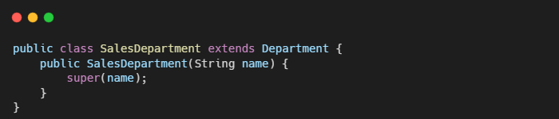
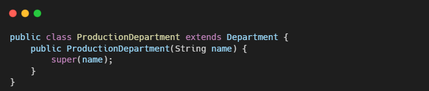
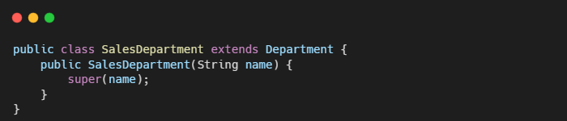
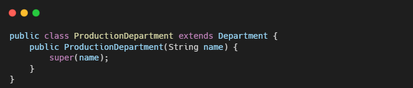

The Change Preventers
"Change Preventers" adalah smell yang mengindikasikan bahwa ketika melakukan perubahan di satu bagian dari kode, akan menyebabkan banyak perubahan di bagian lainnya. Dampaknya, pengembangan program menjadi lebih rumit dan mahal.
 


